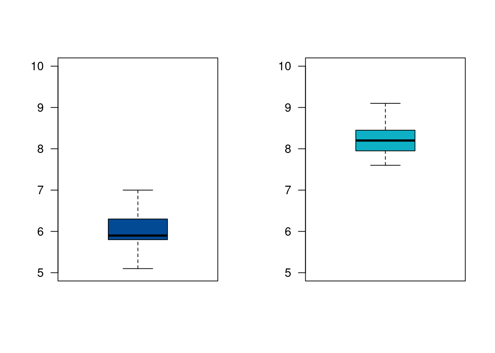
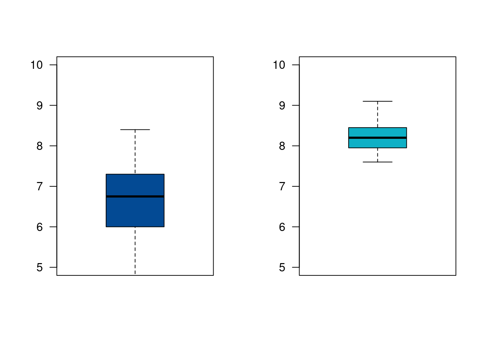
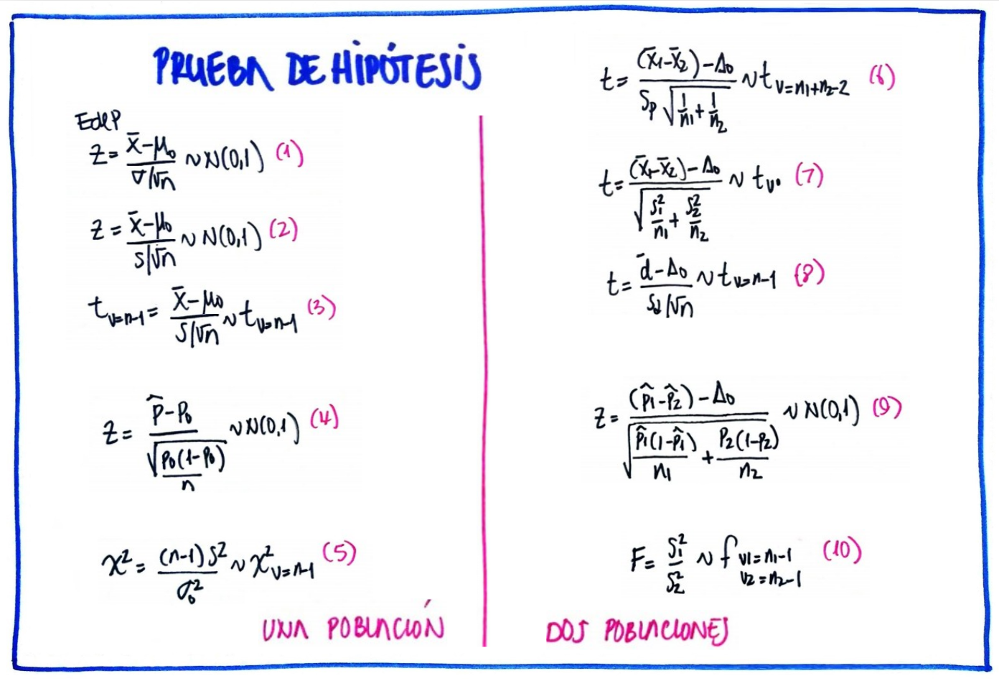
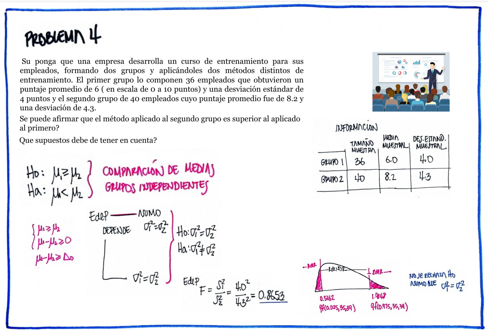
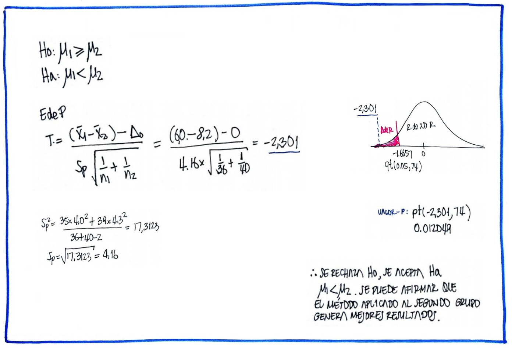
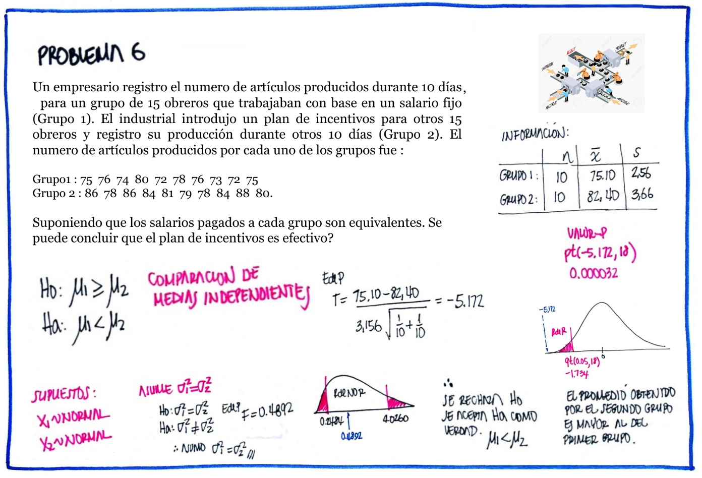
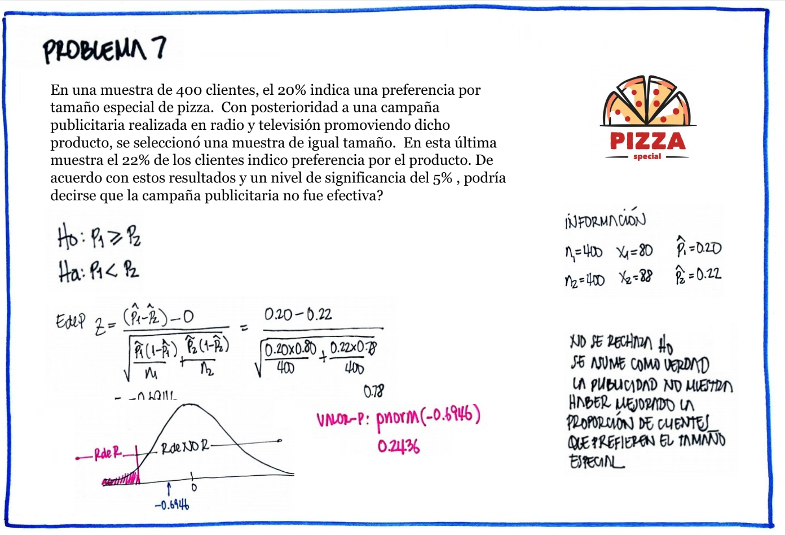
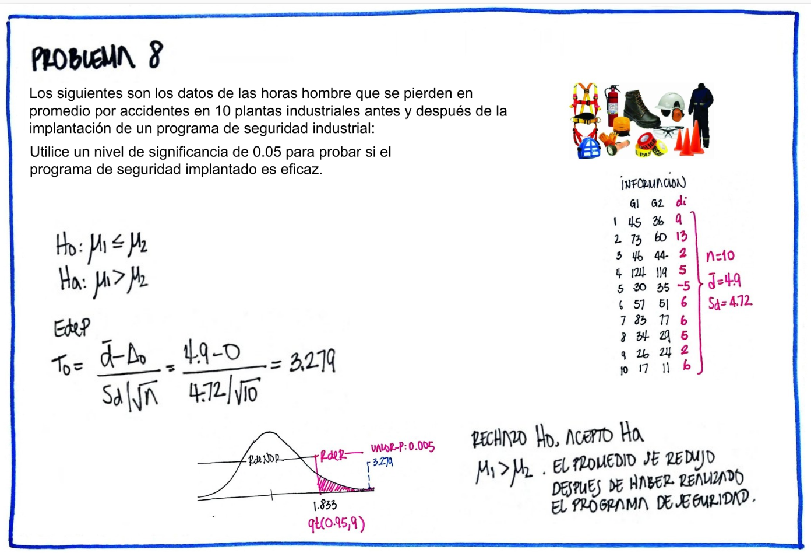
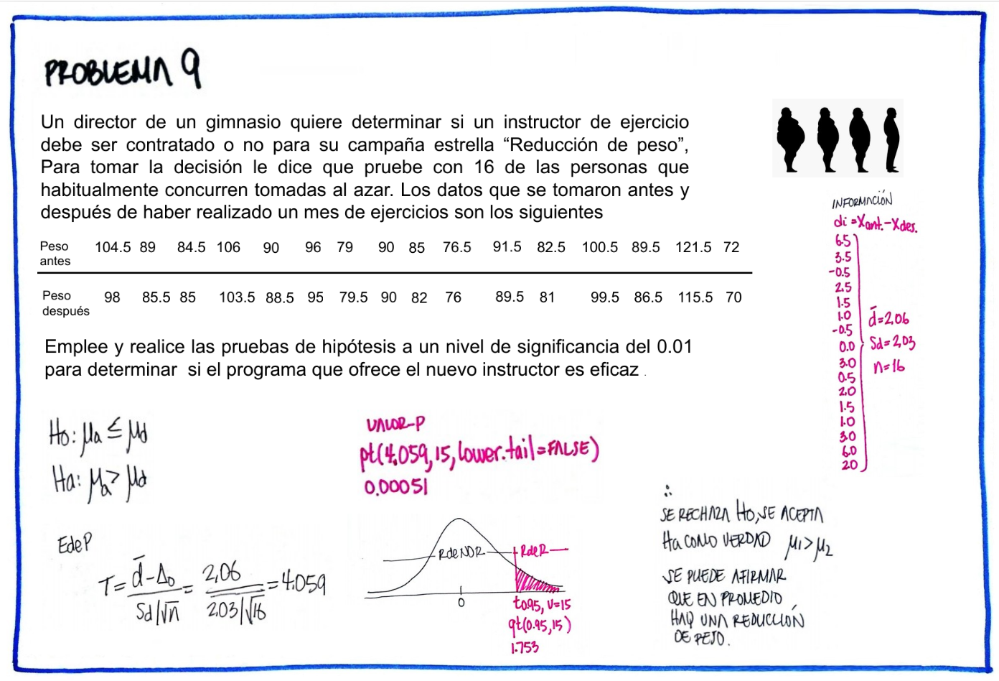
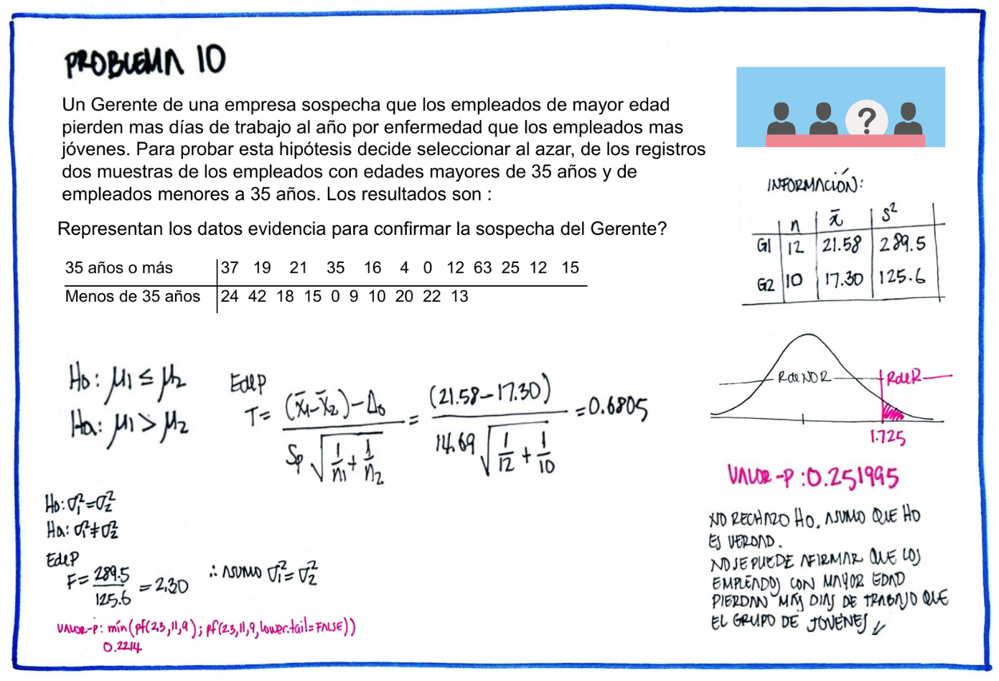

Pruebas de hipótesis para dos poblaciones
Módulo 3
dgonzalez
| parámetro | prueba de dos colas | prueba de cola inferior | prueba de cola superior |
|---|---|---|---|
| \(\mu_{1}-\mu_{2}\) | \(Ho: \mu_{1}-\mu_{2}=\Delta_{o}\) | \(Ho: \mu_{1}-\mu_{2} \geq=\Delta_{o}\) | \(Ho: \mu_{1}-\mu_{2}\leq\Delta_{o}\) |
| \(Ha: \mu_{1}-\mu_{2} \neq \Delta_{o}\) | \(Ha: \mu_{1}-\mu_{2} <\Delta_{o}\) | \(Ha: \mu_{1}-\mu_{2} > \Delta_{o}\) | |
| \(p_{1}-p_{2}\) | \(Ho: p_{1}-p_{2} = \Delta_{o}\) | \(Ho: p_{1}-p_{2} \geq\Delta_{o}\) | \(Ho: p_{1}-p_{2} \leq \Delta_{o}\) |
| \(Ha: p_{1}-p_{2} \neq \Delta_{o}\) | \(Ha: p_{1}-p_{2} < \Delta_{o}\) | \(Ha: p_{1}-p_{2} > \Delta_{o}\) | |
| \(\sigma_{1}^{2}/\sigma_{2}^{2}\) | \(Ho: \sigma_{1}^{2} = \sigma^{2}_{2}\) | \(Ho: \sigma_{1}^{2} \geq \sigma_{2}^{2}\) | \(Ho: \sigma_{1}^{2} \leq \sigma_{2}^{2}\) |
| \(Ha: \sigma_{1}^{2} \neq \sigma^{2}_{2}\) | \(Ha: \sigma_{1}^{2} < \sigma_{2}^{2}\) | \(Ha: \sigma_{1}^{2} > \sigma_{2}^{2}\) |
Pruebas de hipótesis para una comparación de dos medias
Caso para grupos pareados
| El director de un gimnasio requiere determinar si contrata o no a un instructor para su campaña de reducción de peso. Para tomar la decisión decide tomar un grupo de 16 personas que acuden normalmente para darle una oportunidad a un aspirante al cargo. Los siguientes datos corresponden a los resultados obtenidos antes y después de un mes de estar en el programa. Utilice un nivel de significancia \(\alpha= 0.10\), para determinar si contrata o no al aspirante. |
| pant | 104.5 | 89 | 84.5 | 106 | 90 | 96 | 79 | 90 | 85 | 76.5 | 91.5 | 82.5 | 100.5 | 89.5 | 121.5 | 72 |
| pdes | 98 | 85.5 | 85 | 103.5 | 88.5 | 95 | 79.5 | 90 | 82 | 76 | 89.5 | 81 | 99.5 | 86.5 | 115.5 | 70 |
Ho: \(\mu_{ant} \geq \mu_{des}\)
Ha: \(\mu_{ant} < \mu_{des}\)
pant=c(104.5,89,84.5,106,90,96,79,90,85,76.5,91.5,82.5,100.5,89.5,121.5,72)
pdes=c(98,85.5,85,103.5,88.5,95,79.5,90,82,76,89.5,81,99.5,86.5,15.5,70)
t.test(pant, pdes,
alternative = "less",
mu = 0,
paired = TRUE,
conf.level = 0.95)
Paired t-test
data: pant and pdes
t = 1.2736, df = 15, p-value = 0.8889
alternative hypothesis: true mean difference is less than 0
95 percent confidence interval:
-Inf 19.75467
sample estimates:
mean difference
8.3125 Conclusión
Como el valor-p ( 0.8889) es mayor que nuestro nivel de significancia (\(\alpha= 0.10\)), no se rechaza la hipótesis nula, no existe suficiente evidencia en la muestra que permita rechazarla. Se asume que Ho es verdad. Es decir que no hay evidencia que el programa reduzca el peso.
Caso par grupos independientes, variables normales, varianzas iguales
 |
Una empresa desarrolla un curso de entrenamiento para sus empleados, formando dos grupos y aplicando dos metodologías diferentes de entrenamiento con el fin de poder evaluar que método produce los mejores resultados. El primer grupo (g1) esta conformado por 36 empleados y el segundo grupo (g2) por 40 empleados . Se puede afirmar que el método aplicado al segundo grupo produce mejores resultados que el aplicado al primer grupo ? ¿Que supuestos debe tener en cuenta? |
| Grupo 1 | 6.8, 6.1, 5.8, 5.9, 5.8, 6.4, 5.7, 6.0, 5.9, 6.4, 6.0, 5.7, 6.5, 6.5, 6.0, 5.9, 5.7, 5.8, 5.9, 5.8, 6.0, 6.0, 5.8, 5.7, 6.1, 5.9, 5.2, 6.3, 5.4, 6.5, 5.5, 5.9, 7.0, 6.4, 5.1, 6.3 |
| Grupo 2 | 8.8, 8.5, 8.4, 8.5, 7.6, 8.7, 8.0, 7.9, 8.2, 8.0, 7.8, 8.6, 8.5, 7.9, 8.5, 8.3, 8.4, 8.2, 8.3, 7.9, 8.2, 7.7, 7.8, 7.7, 8.1, 8.0, 8.3, 8.2, 8.1, 8.3, 8.1, 8.8, 7.7, 9.1, 7.6, 8.4, 8.2, 8.3, 8.1, 8.7 |
grupo1=c(6.8, 6.1, 5.8, 5.9, 5.8, 6.4, 5.7, 6.0, 5.9, 6.4, 6.0, 5.7, 6.5, 6.5, 6.0, 5.9, 5.7, 5.8, 5.9, 5.8, 6.0, 6.0, 5.8, 5.7, 6.1, 5.9, 5.2, 6.3, 5.4, 6.5, 5.5, 5.9, 7.0, 6.4, 5.1, 6.3)
grupo2=c(8.8, 8.5, 8.4, 8.5, 7.6, 8.7, 8.0, 7.9, 8.2, 8.0, 7.8, 8.6, 8.5, 7.9, 8.5, 8.3, 8.4, 8.2, 8.3, 7.9, 8.2, 7.7, 7.8, 7.7, 8.1, 8.0, 8.3, 8.2, 8.1, 8.3, 8.1, 8.8, 7.7, 9.1, 7.6, 8.4, 8.2, 8.3, 8.1, 8.7)
par(mfrow = c(1, 2))
boxplot(grupo1, las=1, col=c2, ylim=c(5,10))
boxplot(grupo2, las=1, col=c3, ylim=c(5,10))
Iniciaremos con una prueba de hipótesis para la comparación de varianzas:
Ho:\(\sigma^{2}_{1} =
\sigma^{2}_{2}\)
Ha:\(\sigma^{2}_{1} \neq
\sigma^{2}_{2}\)
var.test(grupo1,grupo2)
F test to compare two variances
data: grupo1 and grupo2
F = 1.2975, num df = 35, denom df = 39, p-value = 0.4282
alternative hypothesis: true ratio of variances is not equal to 1
95 percent confidence interval:
0.6776032 2.5137013
sample estimates:
ratio of variances
1.297479 Conclusión
Como el valor-p (0.4282) es mayor al nivel de significancia (\(\alpha=0.05\)), no rechazamos la hipótesis nula, no existe suficiente evidencia en la muestra que permita rechazarla, asumimos que las varianza son iguales.
Ho: \(\mu_{1} \geq \mu_{2}\)
Ha: \(\mu_{1} < \mu_{2}\)
t.test(grupo1, grupo2,
alternative ="less",
mu = 0,
paired = FALSE,
var.equal = TRUE,
conf.level = 0.95)
Two Sample t-test
data: grupo1 and grupo2
t = -25.413, df = 74, p-value < 2.2e-16
alternative hypothesis: true difference in means is less than 0
95 percent confidence interval:
-Inf -2.072933
sample estimates:
mean of x mean of y
5.991667 8.210000 Conclusión
Como el valor-p (2.2e-16) es menor que el nivel de significancia, rechazamos la hipótesis nula, aceptamos como verdadera la hipótesis alterna. La media el primer grupo es significativamente menor que la media obtenida por el segundo grupo. Esto indica que el método aplicado al segundo grupo produce mejores resultados.
Caso para grupos independientes, variables normales, varianzas diferentes
 |
Supongamos que la empresa del ejemplo 5, desea comparar los resultados obtenidos por el grupo 2 con un tercer grupo externo con el fin de realizar una valoración adicional que le permita una visión más general de los métodos empleados |
grupo3=c(8.4, 7.5, 6.9, 6.6, 7.0, 5.5, 5.5, 7.9, 6.9, 7.3, 4.7, 5.5, 6.7, 8.3, 6.0, 6.3, 5.5, 8.4, 7.1, 5.3, 6.9, 5.5, 7.2, 6.5, 6.1, 7.8, 7.4, 6.6, 6.8, 6.0, 6.9, 7.4, 4.9, 6.2, 7.3, 6.2)
grupo2=c(8.8, 8.5, 8.4, 8.5, 7.6, 8.7, 8.0, 7.9, 8.2, 8.0, 7.8, 8.6, 8.5, 7.9, 8.5, 8.3, 8.4, 8.2, 8.3, 7.9, 8.2, 7.7, 7.8, 7.7, 8.1, 8.0, 8.3, 8.2, 8.1, 8.3, 8.1, 8.8, 7.7, 9.1, 7.6, 8.4, 8.2, 8.3, 8.1, 8.7)
par(mfrow = c(1, 2))
boxplot(grupo3, las=1, col=c2, ylim=c(5,10))
boxplot(grupo2, las=1, col=c3, ylim=c(5,10))
var.test(grupo3,grupo2)
F test to compare two variances
data: grupo3 and grupo2
F = 7.2974, num df = 35, denom df = 39, p-value = 1.334e-08
alternative hypothesis: true ratio of variances is not equal to 1
95 percent confidence interval:
3.811031 14.137763
sample estimates:
ratio of variances
7.297388 t.test(grupo3, grupo2,
alternative ="less",
mu = 0,
paired = FALSE,
var.equal = FALSE,
conf.level = 0.95)
Welch Two Sample t-test
data: grupo3 and grupo2
t = -9.2548, df = 43.571, p-value = 3.781e-12
alternative hypothesis: true difference in means is less than 0
95 percent confidence interval:
-Inf -1.285811
sample estimates:
mean of x mean of y
6.638889 8.210000 En este caso tenemos una comparación de medias para grupos independientes con varianzas diferentes (como se muestra en el resultado de var.test) .
Conclusión
Analizando el resultado de la prueba t-Student, el valor-p resultante (3.781e-12) indica que se rechaza la hipótesis nula, se acepta la hipótesis alterna como verdadera. Podemos afirmar que existen diferencias significativas entre las dos medias.
Pruebas de hipótesis para la diferencia de proporciones
 |
Una encuesta realizada a 100 usuarios de una tarjeta de crédito seleccionados aleatoriamente, 57 dijeron que sabían que empleando su tarjeta podían ganar millas de viajero. Después de una campaña publicitaria para difundir este beneficio, se realizo una encuesta independiente entre 150 usuarios de la tarjeta de crédito y 87 informaron que conocían el beneficio. ¿Se puede concluir que el conocimiento de este beneficio aumento después de la campaña publicitaria? |
Ho: \(p_{1} \geq p_{2}\)
Ha:
\(p_{1} < p_{2}\)
prop.test(c(57,87),c(100,150),
p = NULL,
alternative = "less",
conf.level = 0.95)
2-sample test for equality of proportions with continuity correction
data: c(57, 87) out of c(100, 150)
X-squared = 0.00068243, df = 1, p-value = 0.4896
alternative hypothesis: less
95 percent confidence interval:
-1.0000000 0.1033338
sample estimates:
prop 1 prop 2
0.57 0.58 Conclusión
Como el valor-p ( 0.4896) es mayor al nivel de significancia, no se rechaza la hipótesis nula, no existe suficiente evidencia en la muestra que permita rechazarla, asumimos que Ho es verdad. Por tal motivo no se perciben mejoras el conocimiento de los beneficios que trae el uso de la tarjeta de crédito. Se recomienda revisar la forma en que se realiza la campaña publicitaria.
Resumen
| Estadístico de prueba | ||
|---|---|---|
| (6) | \(T_{o} = \dfrac{\bar{d}-\Delta_{o}}{s_{d}^{2}} \sim t_{v=n-1}\) | |
| donde: \(\bar{d}=\dfrac{1}{n}\displaystyle\sum_{i=1}^{n}d_{i} \hspace{.2cm}\text{ y } \hspace{.2cm} d_{i} = x_{1}-x_{2}\) | ||
| (7) | \(Z_{o} = \dfrac{(\bar{x}_{1}-\bar{x}_{2})- \Delta_{o}}{\sqrt{\dfrac{\sigma_{1}^{2}}{n_{1}}+\dfrac{\sigma_{2}^{2}}{n_{2}}}} \sim N(0,1)\) | |
| (8) | \(T_{o} = \dfrac{(\bar{x}_{1}-\bar{x}_{2})-\Delta_{o}}{s_{p}\sqrt{\dfrac{1}{n_{1}} + \dfrac{1}{n_{2}}}} \sim t_{v=n_{1}+n_{2}-2}\) | |
| donde: \(s^{2}_{p}=\dfrac{(n_{1}-1)s_{1}^{2}+(n_{2}-1)s^{2}_{2}}{n_{1}+n_{2}-2}\) | ||
| (9) | \(T_{o} = \dfrac{(\bar{x}_{1}-\bar{x}_{2}-\Delta_{o}}{\sqrt{\dfrac{s^{2}_{1}}{n_{1}}+\dfrac{s^{2}_{2}}{n_{2}}}} \sim t_{v^{*}}\) | |
| donde: \(v^{*}= \dfrac{(s^{2}_{1}/n_{1} + s^{2}_{2}/n_{2})^{2}}{\dfrac{(s^{2}_{1}/n_{1})^{2}}{n_{1}-1}+\dfrac{(s^{2}_{2}/n_{2})^{2}}{n_{2}-1}}\) | ||
| (10) | \(Z_{o} = \dfrac{(\widehat{p_{1}}-\widehat{p_{2}})-\Delta_{o}}{\sqrt{\widehat{p}\widehat{q}(1/n_{1}+1/n_{2})}}\) | |
| donde: \(\widehat{p}=\dfrac{x_{1}+x_{2}}{n_{1}+n_{2}}\) \(\widehat{q}=1-\widehat{p}\), | ||
| \(\widehat{p_{1}}=\dfrac{x_{1}}{n_{1}} \hspace{.1cm} \text{ y } \hspace{.1cm}\widehat{p_{2}}=\dfrac{x_{2}}{n_{2}}\) | ||
| (11) | \(F = \dfrac{s_{1}^{2}}{s_{2}^{2}} \sim F_{v_{1}:n_{1}-1; v_{2}: n_{2}-1}\) | |
| Reglas de decisión | |
|---|---|
| Regla1: | Si el \(EdeP\) cae en la \(RdeR\), entonce se rechaza la \(H_{0}\) y se acepta \(H_{a}\) como verdadera. Si por el contrario el \(EdeP\) NO cae en la \(RdeR\), entonces NO se rechaza \(H_{0}\), no existe suficiente evidencia para rechazarla, asumimos que \(H_{0}\) es verdad. |
| Regla2: | Si \(\alpha >\)
valor-p entonces rechazamos \(H_{0}\), se acepta \(H_{a}\). Si por el contrario \(\alpha<\) valor-p, no
rechazamos \(H_{0}\),
asumimos que \(H_{0}\)
es verdad. |
| Regla3: | El valor-p se interpreta como el error que
puedo cometer al rechazar \(H_{0}\),
siendo esta verdadera (cometer error tipo I). Si este valor es
considerado como pequeño, rechazo \(H_{0}\), se acepta \(H_{a}\). Si por el contrario se considera
este valor grande, entonce no rechazo \(H_{0}\), asumo que \(H_{0}\) es verdad. |
Código R

| Dos poblaciones | |
t.test(x1,x2, paired=TRUE) |
|
t.test(x1,x2, paired=FALSE, var.equal=TRUE, conf.level=0.95) |
|
t.test(x1,x2, paired=FALSE, var.equal=FALSE, conf.level=0.98) |
|
var.test(x,y) |
|
prop.test(c(x1,x2), c(n1,n2)) |
| Tipos de pruebas | |
|---|---|
| Dos colas | \(H_{0}: \theta = \theta_{o}\) vs \(H_{0}: \theta \neq \theta_{o}\) |
| Cola superior | \(H_{0}: \theta \leq \theta_{o}\) vs \(H_{0}: \theta > \theta_{o}\) |
| Cola inferior | \(H_{0}: \theta \geq \theta_{o}\) vs \(H_{0}: \theta < \theta_{o}\) |
Videos
Video paramétricas
Tutorial
Con el siguiente código en R , podrán abrir un tutorial con problemas propuestos sobre el tema. Es necesario para ello abrir la consola de R o RStudio y correr el código
Si ya se tienen instalados los paquetes learnr y
remotes, no es necesario hacerlo nuevamente. El paquete
paquetepye si debe ser instalado cada vez que sea utilizado
con el fin de incorporar nuevas actualizaciones
install.packages("learnr") # solo una vez
install.packages("devtools") # solo una vez
devtools::install_github("dgonxalex80/paqueteDEG")
learnr::run_tutorial("Taller_pruebas1", "paqueteDEG")
install.packages("learnr") # solo una vez
install.packages("devtools") # solo una vez
devtools::install_github("dgonxalex80/paqueteDEG")
learnr::run_tutorial("Taller_pruebas1", "paqueteDEG")
learnr::run_tutorial("Taller_pruebas2", "paqueteDEG")
learnr::run_tutorial("Taller_pruebas2", "paqueteDEG")
Nota: para la instalacion del paquete distributions se requiere la instalcion del paquete ctv : https://cran.r-project.org/web/views/Distributions.html







